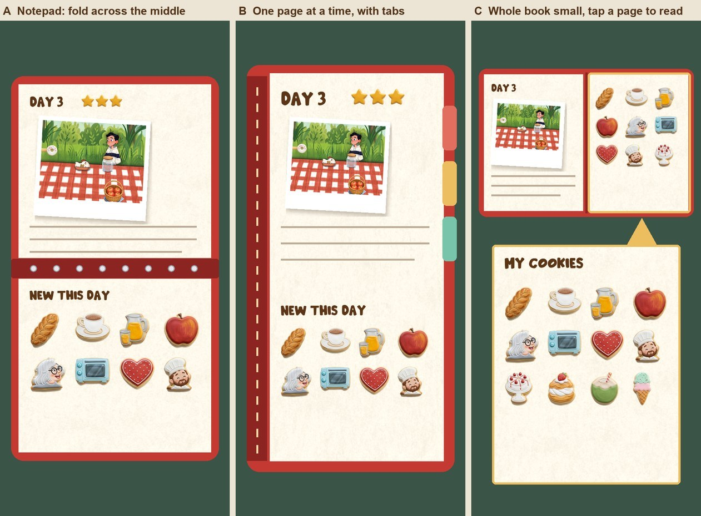
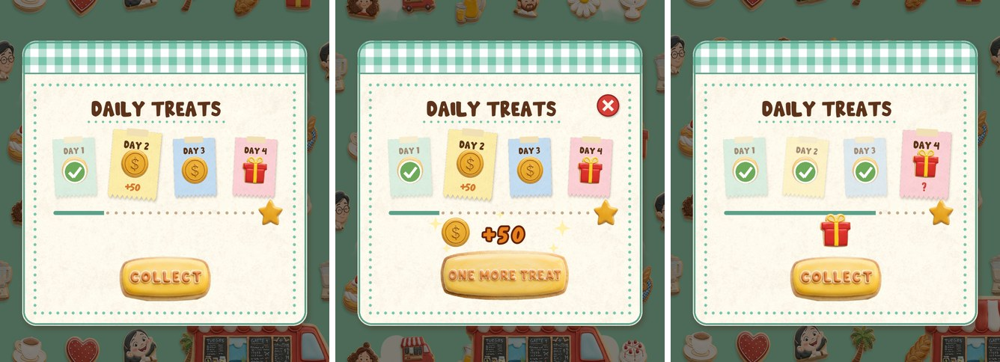
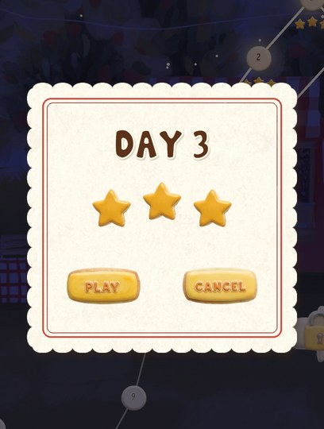
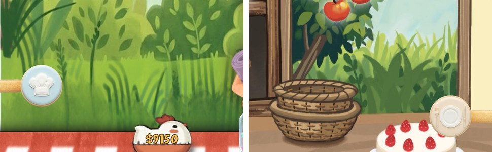
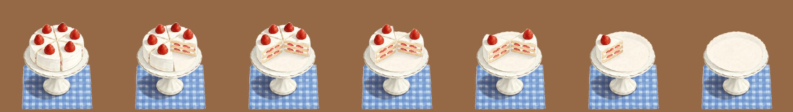
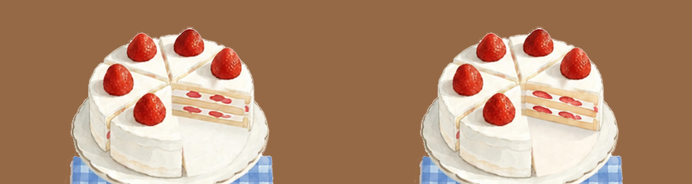
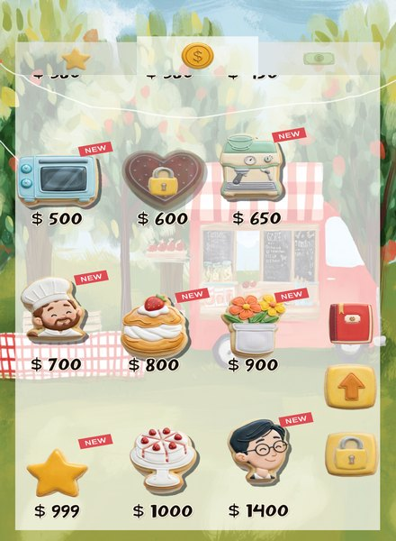
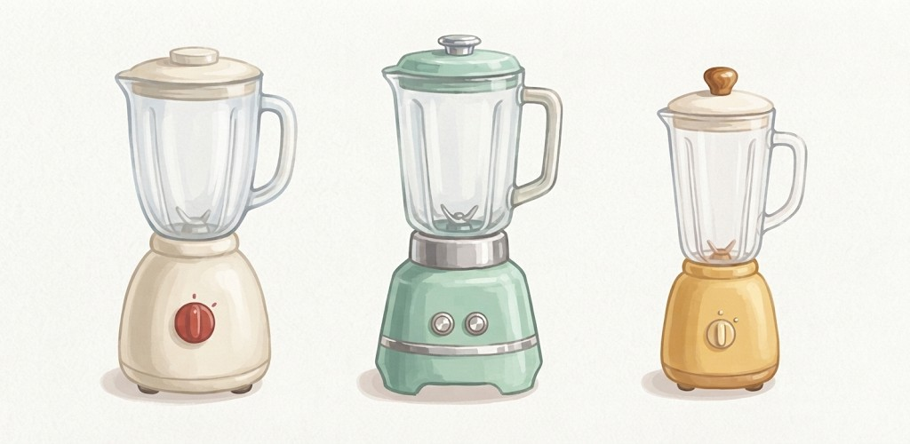
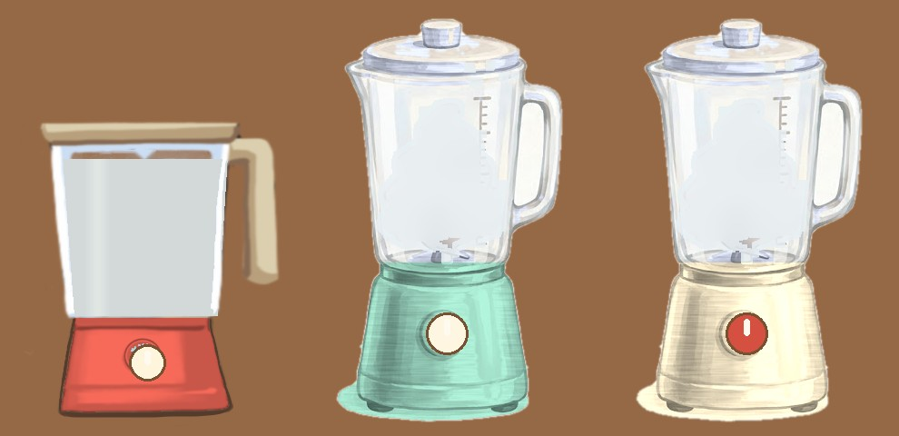

Food Truck Cafe
19 November. 2026.11.18 is live on the App Store; test build 2026.11.19 (0) in TestFlight.
1Next
You
Release 1 (the look): check the cards in Current; then say "build" for a test build, and send the What's New words.
Release 2 (the kitchen, this weekend): pick a regular blender (MVP); tell me the kitchen flow.
Q&A: the journal on a tall screen: three ways, pick one.
Me
For release 1 after your "build": test build 2026.11.19 (1); new store screenshots and video with caption style B.
2Q&A
The book as a journal: how does an open book fit a tall screen?

- A, a notepad: the fold runs across the middle, so both pages of the open book show at full width: the day above (stars, a picture of the table, a line or two), what came with it below. Pages turn upwards. This is the only way to see a real two-page spread large on a phone.
- B, one page at a time (as the cookie book is now): bound on the left, each page fills the screen, the page turns as it does today. Coloured tabs jump to the parts (Journal, My cookies, Customers).
- C, the whole book small: both pages side by side at the top, and the page you tap shown large below. Looks most like a book, but the small pages are hard to read.
- What the journal could hold: one entry per day (stars, coins, customers served, the best tip), firsts ("hired Grandma", "bought the second oven"), the cookies bought (today's book), the customers met, the chapters' maps.
- My pick: A for the journal pages, with the cookie pages inside it; it keeps today's red cover and page turn (upwards instead of sideways).
3Current
Release 1: the look. Everything here is in the project; the last test build is 2026.11.19 (0), from before these.
Daily Treats, as you asked: the notes on the square mint card.

- The red tape is gone: the title is plain brown letters with a row of dots, as on the stamp card.
- The card is square; the dotted line is its edge and everything keeps a margin inside it. The close button sits inside the dots with room round it.
- Later days show only their picture (coin or gift); today's note alone shows "+50".
Day card, cookie book, handle, cake.
Day card: square, the day, stars and buttons spread evenly down it.

Cookie book: the whole page turns now, with its title, cookies, arrows and words on it; the next page lies under it. It plays your sound (4, the magazine page). The book's button is the old one again, as you said.

Pull handle: your pair 2. On the table the knob is the chef's hat (it leads to the kitchen); in the kitchen it is the plate (it leads back).

Strawberry cake: in the game (your tick). ChatGPT's cut faces and bare plate are laid into the game's frames; the slices that stay, the stand and the napkin are the same pixels in every frame, so nothing jumps.


Release 1, the whole list (since 2026.11.18, which is live).

- Paper: Daily Treats (square mint card, notes), the map's day card (doily), the cookie book as a red book with turning pages.
- Cookies: One more treat, the shop's three tabs, the pull handles (stick, chef's hat, plate).
- Shop: 1 star for 999 coins; coffee machine upgrade 650; a crunch on the book's cookies.
- Tutorial and arranging: the hand drags the real coffee machine and coffee bags; "drag to arrange" banner on day 2 only, low in the kitchen; NEW on the cups only for the cups; the table's handle movable at any time; the coffee bags glow while arranging.
- Play: 2 stars at 80 %; Daily Treats only after the first tutorial; Apple's rating popup after day 3; the strawberry cake's new frames.
- Still to do for it: a test build when you say; new store screenshots and video with caption style B (your pick); your What's New words.
4MVP
Release 2, this weekend: the kitchen flow, with a regular blender. Waiting for your flow.
A regular blender for the kitchen: first drafts. The one in the game stays the ice cream blender.


5Backlog
Nothing open.
6Analysis
Nothing open.
7Marketing
Nothing open.